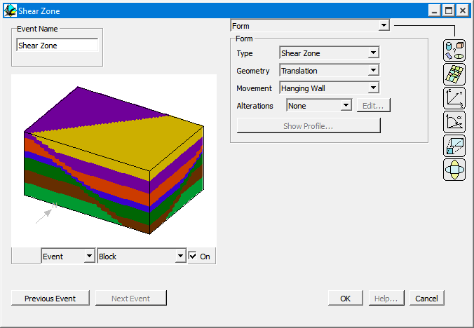
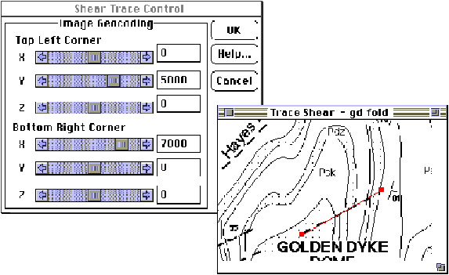
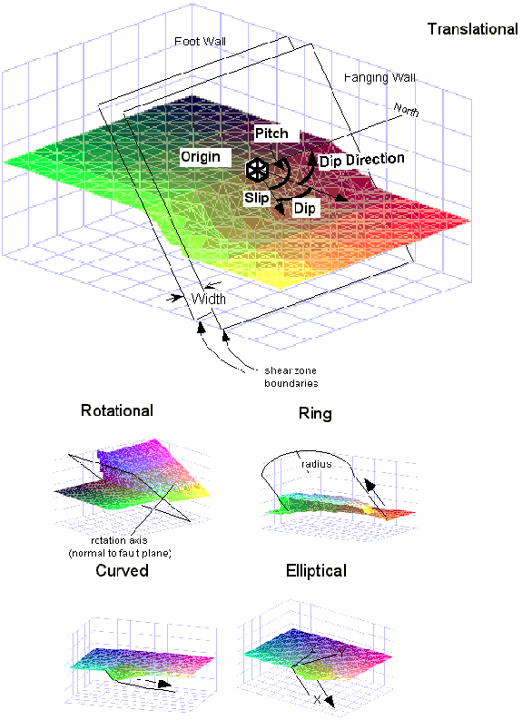

Shear zone
In order to define an shear zone or kink event, place an shear zone icon  in the History window. You will then be provided with the Shear zone definition window.
in the History window. You will then be provided with the Shear zone definition window.

Shear zones and kinks are parallel sided zones of simple shear which share the same overall geometries as faults. The cross-sectional profile of the shear zone can either be sharp (kink) or smooth (shear zone).
| GROUP | NAME | FUNCTION |
|---|---|---|
| Form | Type: | |
| Shear Zone | Smoothly varying displacements across shear zone | |
| Kink | Kink like displacement profile | |
| Geometry: | ||
| Translation | Simple planar translational shear zones | |
| Rotation | Simple planar rotational shear zones | |
| Elliptical | Elliptical shear zone Elliptical fault plane, these shear zones displace material within an ellipsoidal zone defined by the long axes of the ellipsoid, with slip vectors dying off away from the centre of the ellipsoid. | |
| Curved | Curved shear zone Curved fault plane, essentially an elliptical shear zone with a curved shear zone surface, which is defined by its profile, and the amount of decay of the curvature away from the plane of definition. | |
| Ring | Ring shear zoneRing fault, producing a cylindrical volume of slipped material. Dip and Dip Direction are actually the to Plunge and Plunge Direction of central axis of ring shear zone. | |
| Movement: | ||
| Hanging Wall | Hanging wall Hanging wall only movement on shear zone (hanging wall is inside of ring shear zone). | |
| Foot Wall | Foot wall Foot wall only movement on shear zone (foot wall is outside of ring shear zone). | |
| Both | Both footwall and hanging Both footwall and hanging wall. The total slip vector is divided into 50% movement in each direction. | |
| Alterations: | ||
| None | No alteration halo associated with this event | |
| Top | Alteration halo on hanging wall side of shear zone | |
| Bottom | Alteration halo on foot wall side of shear zone | |
| Both | Alteration halo on both sides of shear zone | |
| Edit | Brings up Alteration Profile window | |
| Show Profile | Shows Profile Definition window for Curved Shear zones | |
| Surface Shape | Flat Plane | Shear zone plane defined only by Geometries options (see above) |
| DXF Surface | Part of shear zone plane defined by DXF triangulated surface | |
| View | View grey scale image of DXF surface topography | |
| X Dim | Scaling factor for X direction of plane | |
| Y Dim | Scaling factor for Y direction of plane | |
| Z Dim | Scaling factor for Z direction of plane |
| Position | X | X position of one point on shear zone plane (centroid of elliptical and curved shear zones, centre of rotation of rotational shear zones, top right hand corner of DXF surface bounding rectangle) |
| Y | Y position of one point on shear zone plane | |
| Z | Z position of one point on shear zone plane | |
| Orientation | Dip Dir | Dip Direction of Shear zone Plane |
| Dip | Dip of Shear zone Plane | |
| Pitch | Pitch of slip vector on shear zone plane | |
| Trace From Image | Allows orientation of shear zone to be traced directly from an image file (BMP, PNG, …). | |
| Scale | Rotation | Rotation of shear zone block in degrees, around normal to shear zone passing through X,Y,Z, anticlockwise looking down rotation axis |
| Slip | Displacement on shear zone parallel to slip vector | |
| Amplitude | Amplitude of curvature of shear zone, as defined on profile | |
| Width | Width of shear zone | |
| Radius | Radius of Ring Shear zone | |
| Cyl Index | Cylindricity index for decay of curvature of curved shear zones. Distance perpendicular to profile at which amplitude drops to 1/2 following a exponential drop-off | |
| Profile Pitch | Orientation of Curved Shear zone Profile (Independant of Slip Vector Pitch) | |
| Scale (Ellipsoid) | X Axis | Long axes of ellipsoid for elliptical shear zones (X=slip direction, XZ plane = shear zone) The magnitude of the chosen slip vector must always be less than the X value. |
| Y Axis | Magnitude of ellipsoid normal to shear zone plane | |
| Z Axis | Magnitude of ellipsoid normal to slip vector |
Tracing Shear Zone Orientations From Maps
When the Trace From Image Button is selected, the program will ask for an image (BMP, PNG, …) from which fault trends can be traced directly, and also calculates the position. The scaling is determined by the Fault Trace Control Window, which determines the coordinates of the NW and SE corners. The two points on the fault trace may be defined by clicking in the Image window, and may be edited by dragging them.


Noddy · open source under the MIT licence · Loop3D/noddy_qt